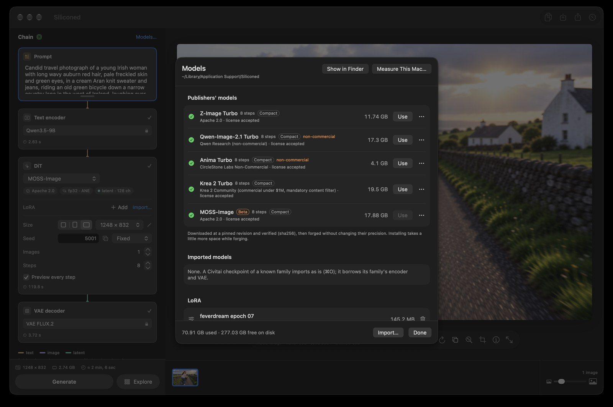

v0.15 · free · open source · Apple silicon
Siliconed measures your Mac, then runs four image models on the kernels that won there: GPU, CPU matrix unit, Neural Engine. Full fp32, checked against the reference, inside a fixed memory budget. No Python. No server. No cloud.
Apache 2.0 · macOS 26 or later · M1 and later · signed and notarized

Four models · the largest first
12.9 billion parameters. The largest model Siliconed runs.
Aesthetic images, from photography to painting. The whole 8-step recipe in fp32 on the publisher's bf16 weights: 34 GB streamed from disk, while the app stays inside a 10 GB budget on a 16 GB Mac.
Standard, Compact or Light, from open copies proven identical to Krea's files. No account, no sign-in. Krea 2 Community license: commercial use under $1M of annual revenue, a content filter when deployed.


| Model | What it does | License |
|---|---|---|
| Krea 2 Turbo | text-to-image (aesthetic images, from photography to painting), LoRA | Krea 2 Community (commercial under $1M annual revenue, content filter required when deployed) |
| Z-Image Turbo | text-to-image, LoRA | Apache 2.0 |
| Qwen-Image-2.1 Turbo | text-to-image, editing by instruction with 1 to 3 images, LoRA | Qwen Research (non-commercial) |
| Anima Turbo | text-to-image (illustration, painting, anime), LoRA | CircleStone Labs Non-Commercial (the images may be used commercially) |
1024², 8 steps, seed 42, on an M1 Pro with 16 GB, app 0.15, Faster Rendering on (the default). Compact, the default: Krea 2 Turbo 135.8 s, Z-Image Turbo 83.1 s, Qwen-Image-2.1 Turbo 100.2 s, Anima Turbo 33.1 s. Standard, the publisher's bf16 in fp32: 147.8 s, 82.4 s, 110.4 s, 34.3 s. Light: 145.0 s, 87.5 s, 103.7 s, 34.7 s. Every step at full size (Standard, 0.12): 221.1 s, 117.7 s, 142.7 s, 44.4 s. An edit with one reference: 211 s (0.10).
The adaptive engine
About a minute. No model. No guesswork.
Before the first render after each install or update, Siliconed gets to know your Mac. It runs the real matrix products of the models' blocks on the GPU, on the CPU's matrix unit (AMX), on the Neural Engine and on the GPU beside each; attention through three kernels; products straight on published int8 and Q8_0 weights; bf16 on the GPU's tensor units. Every output is checked against the exact result.
That becomes your Mac's map. A kernel turns on only if it computed right and beats the default by at least 5 % (more if the machine drifted during the measure). No kernel is switched on by chip name: another Mac draws its own map. The speed changes; the picture does not move beyond the arithmetic it checked. Help → Measure This Mac shows it, and lets you share it.
map · MacBook Pro M1 Pro · 23/10/2026
Flash gains 3 %: inside the margin, so it stays off. One Mac's map; yours decides for itself.
The Neural Engine
Where the map turns it on, the Neural Engine takes part of the denoiser's matrix products beside
the GPU, shape by shape, wherever it keeps 90 % of the CPU matrix unit's speed. It computes in
fp16: each weight column and each activation row is lifted by a power of two into fp16's range,
then brought back in fp32, and rows that overflow go back to the GPU. Your choice, per model: off by default on the Standard, which stays the
reference-checked fp32 image; on by default on Compact and Light. The tag reads
fp32 · ANE when it is on.
Editing
One to three images, one sentence.
“Convert this photo to a western comic book style with cel shading.” “Put the dog of image 2 next to her.” Qwen-Image-2.1's encoder sees the images. Then drag the curtain across the result and its original to see exactly what changed.

“Replace her wetsuit with a white linen blouse.” Same face, same hair, same board, same sea and sun: the instruction touches what it names and leaves the rest alone.

Exploration
Seeds, steps, LoRA strengths, models or the alternatives written in braces in the prompt, drawn as quick sketches in the canvas with the axes as labels. « Finish This Image » renders the chosen cell to the end, with the same seed: the image its sketch announced. Here, Anima Turbo with the inCase LoRA: the wetsuit's colour across, the LoRA's strength down.


Why Siliconed
Every stage is compared channel by channel with diffusers and transformers in fp32, and rounds where they round. What cannot be checked against the reference does not ship.
Weights stream from disk as needed. Never more than ¾ of the Mac's memory minus 2 GB (10 GB on a 16 GB Mac): each render computes what it needs before it starts.
Z-Image Turbo Compact (GGUF Q8_0), 1024², 8 steps, Faster Rendering and the Neural Engine as by default: 81–83 s on an M1 Pro. Draw Things' engine with its default 8-bit q8p, on the same Mac: 135–144 s. Wall-clock, not identical arithmetic: the samplers and the images differ.
Nothing leaves your Mac, it works offline once a model is installed, and the render cache is gone when you quit.
silicontrol drives the running app from a terminal with JSON output; silicontrol help is all an agent needs.
Same prompt, seed, settings and version on the same Mac: the same image, byte for byte.
From 1024 px on each side, the first steps run on a half-size grid, the rest at full size: a quarter to a third off the clock, still all 8 evaluations of the recipe. The trick is in the noise: the small grid gets the averaged picture plus the low band of the noise, and the step brought back to full size clears the fine noise exactly as a full step would, so no grain, no cracks; freckles and book spines survive. Another picture than the full-size one, not a blurrier one. Switch it off and you get the full-size recipe, bit for bit, the one checked against diffusers.
Community
Nobody's looking over your shoulder.
Drop in a Civitai checkpoint of a known family (⌘O): it imports as is and borrows its family's encoder and VAE, installed for it if they are not there yet. LoRAs too. Siliconed censors no prompt and adds no filter of its own; nothing goes to a server, and the render cache is emptied at launch and at quit. Whatever you're into stays between you and your GPU.
Each model's license still applies: Krea 2 Community's, for one, asks whoever deploys the model for a content filter.
Install
Standard, Compact or Light.
The publisher's weights, 8-bit versions, or a 4-to-6-bit transformer. The 8-bit Compact is preselected: as fast or faster on an M1 Pro, half the disk. Every file is pinned to a revision and checked by sha256, and downloads resume where they stopped. The next file downloads while the previous one is prepared: Qwen-Image-2.1 installs in about 6½ minutes on a fast connection.

Nothing is preinstalled: pick a model in the app, read its license, and it downloads. Before its first render, the app measures your Mac for about a minute.